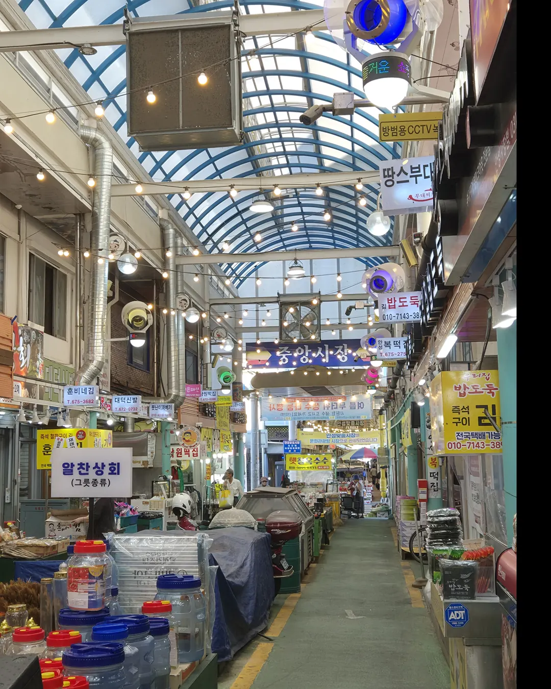

9월 5일 · 토요일
금광달빛축제
이번 호 03 코스와 그대로 이어진다. 낮에 걸었던 수석정수변화원을 밤에 다시 보는 구성이다. 낮의 호수와 밤의 호수는 다른 장소다. 체험부스와 공연이 예정돼 있다.
- 장소
- 금광호수 수석정수변화원
- 시간
- 발행 전 확인
- 입장
- 무료 여부 확인
- 주차
- 수석정 주차장 · 금광면 현곡리 683-6
- 문의
- 031-678-3702
